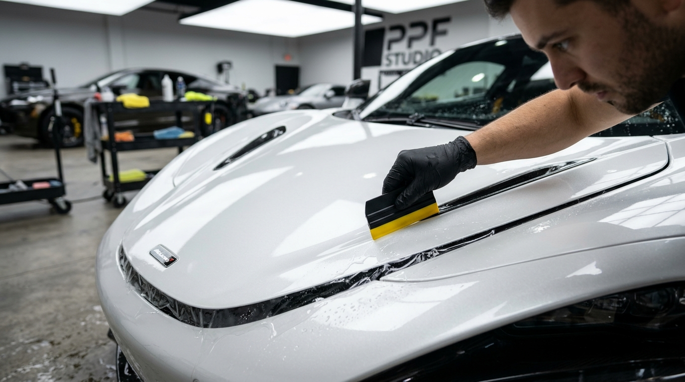
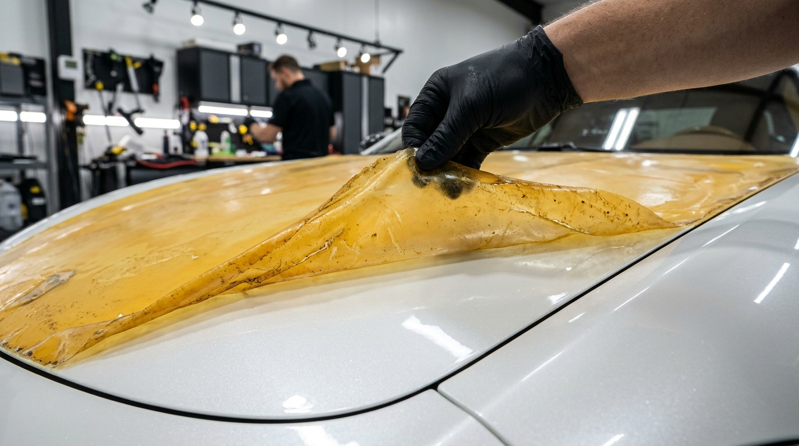
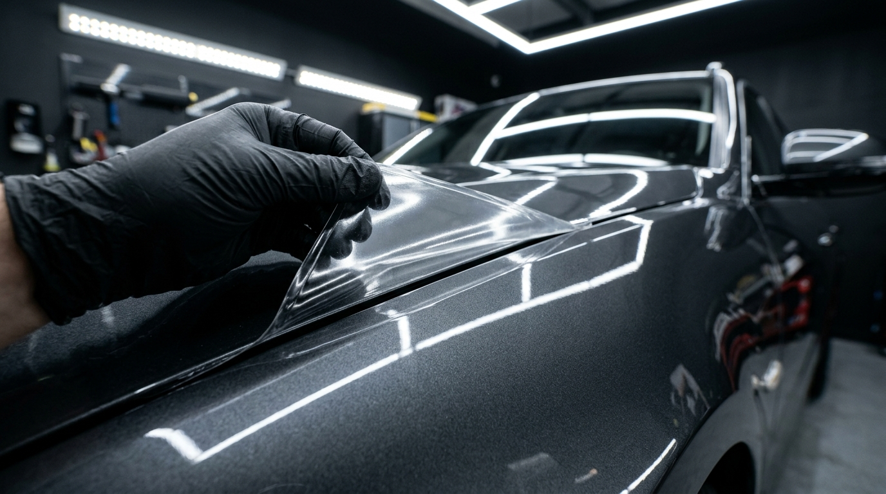
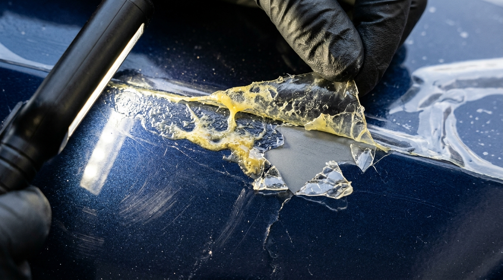
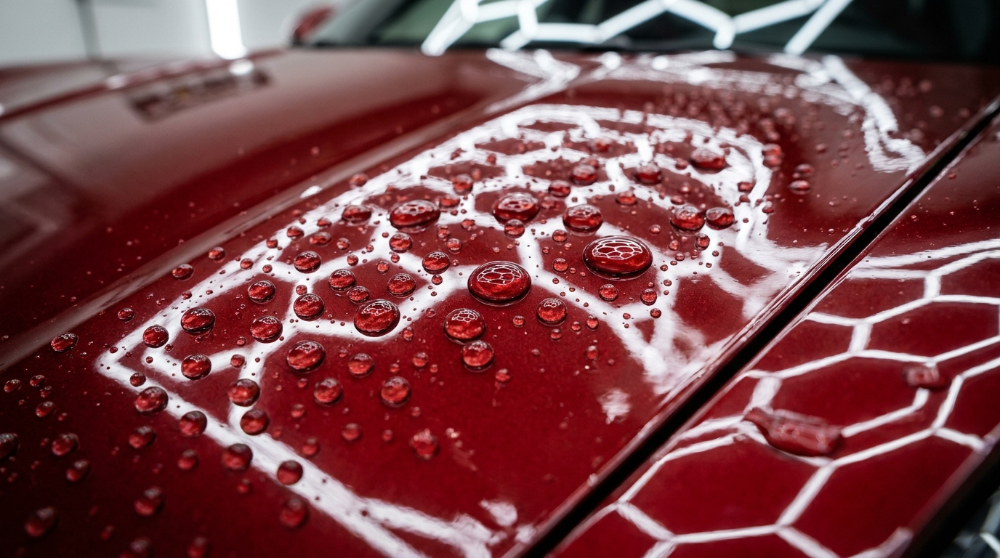
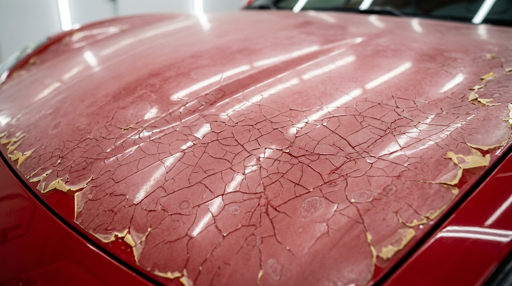

Baret halus pulih sendiri
Coating self-healing aktif panas menutup goresan ringan saat terkena panas matahari atau air hangat.
PPF X-Project dibuat dari TPU alifatik PCL dengan perekat Ashland®. Melindungi dari baret, kerikil, dan sinar UV, lalu bisa dilepas tanpa merusak cat pabrik.
Dipasang hanya oleh teknisi yang lulus pelatihan X-Project.
Mitra Bosch Car Service Indonesia.
“Aturan pertama perlindungan itu sederhana: jangan merusak.”
Teknologi film ini dibangun di atas keahlian Bryan Crowder, pakar perlindungan permukaan otomotif. Fokusnya pada material dan teknologi perekat, untuk mencegah kerusakan akibat proteksi sejak dari sumbernya.
Beberapa tahun kemudian, film berkualitas rendah meninggalkan tiga masalah yang sama. Setiap lapisan PPF X-Project dipilih untuk mencegahnya.

✓ Standar X-Project · Lapisan 01 Substrat 🔍 Perbesar FotoTetap jernih 100% tanpa menguning meski terpapar UV tropis bertahun-tahun, menjaga warna asli cat pabrik tetap murni.
Material polikaprolakton tahan kuning dan tahan hidrolisis.
Material non-PCL teroksidasi sinar UV, berubah kuning kecokelatan dan merusak tampilan warna mobil.

Daya rekat awal terukur, cat pabrik tetap utuh saat film dilepas.
Lem kualitas rendah mengeras dan menyatu dengan pernis, sehingga menarik cat asli saat film dikelupas.


Baret halus pulih dengan panas, air dan kotoran mudah luruh.
Top coat murah cepat getas akibat panas matahari, memicu retak seribu (crazing) dan noda permanen.


Cat pabrik hanya sekitar 120 mikron. Film X-Project setebal 190–240 mikron menambah lapisan pelindung di atasnya.
Coating self-healing aktif panas menutup goresan ringan saat terkena panas matahari atau air hangat.
Lapisan nano yang rapat membuat air dan kotoran mudah luruh, mencegah noda air dan korosi.
Daya rekat awal yang pas memudahkan pemasangan, dan saat dilepas tidak meninggalkan residu atau mencabut cat.
Film meregang menahan benturan kerikil, lalu kembali ke bentuk semula.
Ada empat jenis material yang umum dipakai untuk PPF. X-Project hanya memakai tingkat tertinggi.
| Material | Tahan kuning | Tahan cuaca | Catatan |
|---|---|---|---|
| TPU aromatik | Rendah | Rendah | Murah, cepat menguning |
| TPU polieter alifatik | Sedang | Sedang | Mudah sobek saat dilepas |
| PCU polikarbonat | Tinggi | Sedang | Terlalu keras, sulit diregang |
| TPU alifatik PCL · X-Project | Tinggi | Tinggi | Stabil, elastis, umur pakai panjang |
Prime untuk perlindungan harian dengan nilai terbaik. Ultra untuk pemilik yang ingin perlindungan paling lama.
Kualitas material yang sama, harga lebih bersahabat. Tersedia bening, doff, dan hitam.
Coating dan ketahanan yang ditingkatkan untuk mobil premium dan pemakaian jangka panjang.
Nilai uji per seri. GU = gloss unit pada sudut 60°. 1 mil = 25.4 μm. (Klik seri di atas atau baris tabel untuk menyorot perbandingan)
| Seri | Hasil akhir | Kilap | Elongasi saat putus | Ketebalan | Self-healing | Tahan noda & korosi | Garansi |
|---|---|---|---|---|---|---|---|
| Prime 85 Gloss | Bening, glossy | 97 GU | 296% | 8.5 mil 216 μm | Aktif dengan panas | Sangat baik | 5 tahun |
| Prime Matte | Bening, doff | 22 GU | 430% | 7.5 mil 191 μm | Aktif dengan panas | Sangat baik | 5 tahun |
| Prime Black | Hitam, glossy | 90 GU | 410% | 7.5 mil 191 μm | Aktif dengan panas | Sangat baik | 5 tahun |
| Ultra 85 Gloss | Bening, glossy | 96 GU | 386% | 8.5 mil 216 μm | Aktif dengan panas | Sangat baik | 8 tahun |
| Ultra 95 Gloss | Bening, glossy | 97 GU | 378% | 9.5 mil 241 μm | Aktif dengan panas | Sangat baik | 8 tahun |
Angka pada nama seri menunjukkan ketebalan film: 85 = 8.5 mil, 95 = 9.5 mil.
Bengkel resmi X-Project bekerja dengan empat standar inti dan dua belas tahap kerja yang sama, di mana pun mobil Anda dipasang.
4 Standar Inti · 12 Tahap Kerja BakuSet pelindung 8 bagian untuk interior dan komponen sebelum kerja dimulai.
Sistem penekan debu dengan kabut air untuk mencegah bintik dan gelembung di bawah film.
Tanpa gelembung, tanpa tepi terangkat, tanpa bintik. Tepi film dilipat rapi.
Hasil diperiksa titik demi titik sebelum mobil diserahkan.
Garansi hanya berlaku untuk film yang dipasang oleh bengkel resmi. Data dicatat langsung oleh tim X-Project, pemilik cukup menyimpan nomor kartunya.
Teknisi mengisi kartu garansi: nomor rangka, nomor seri roll, area pemasangan, dan seri film.
Bengkel mengirim salinan kartu ke X-Project. Garansi aktif dalam 1×24 jam.
Scan QR di kartu garansi untuk mengecek status garansi Anda. Simpan kartu Anda sebagai bukti saat klaim.
Kecelakaan atau benturan · perawatan yang tidak sesuai petunjuk · film yang dilepas atau dipasang ulang sendiri · pemasangan di atas cat non-orisinal (cat ulang).
Klik kartu kebiasaan di bawah ini sebagai panduan perawatan rutin setelah pemasangan.
Butuh saran antara Seri Prime atau Seri Ultra? Tim konsultan resmi kami siap merekomendasikan perlindungan terbaik sesuai tipe kendaraan Anda.